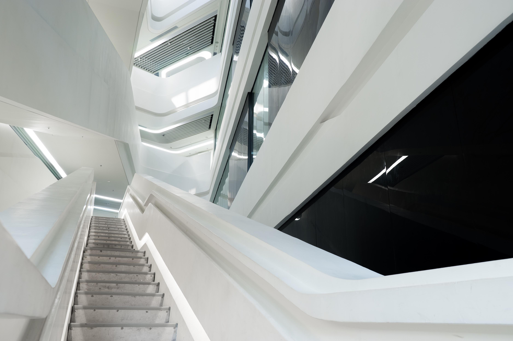

Why Modern Matters
The MODERN ART movement preceded the trends of modern design. In painting, modernism began with the IMPRESSIONIISTS and others who used ABSTRACTION in their work. Modern interior design grew out of the decorative arts, notably ART DECO, in the late 19th and early 20th centuries. It reached its peak in the 1950s and '60s, which is why designers and decorators today may refer to modern design as being "MID-CENTURY." While not suitable for everyone's tastes, modern design can be a strong selling point for a home, with buyers likely to appreciate the clean lines and SIMPLICITY that help define modern design as a major AESTHETIC style.

A contemporary office space is highlighted with minimal dark wood touches and angular shapes shelves.

The right chair can go a long way. This simple Thread & Wire frame chair with rose gold stems is the perfect complement to any modern decor.

With all the clean white that comes with a modern home, green accents from a lively plant can give a room the necessary pop of life. Plus, never forget the importance of natural light.

The right chair can go a long way. This simple Thread & Wire frame chair with rose gold stems is the perfect complement to any modern decor.